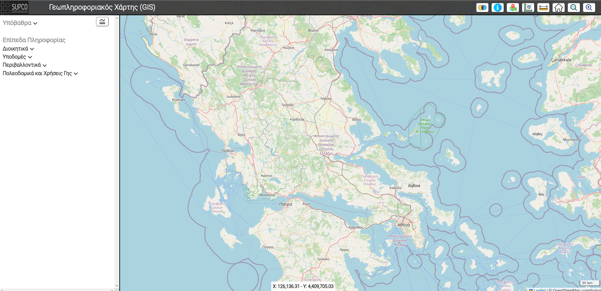

<app-header name="Portal" />
<div class="logout">
  <button type="button" class="btn btn-link" (click)="handleLogout()">
    Log out
  </button>
</div>

<div class="webmap1">
  <a routerLink="/map" rel="noopener noreferrer">
    <br />
  </a>

  <a routerLink="/map" rel="noopener noreferrer" class="app_title">
    Γεωπληροφοριακός Χάρτης
  </a>
</div>

<div class="info">
  <label style="font-weight: bold; font-size: 20px"
    >Μπορείτε να εισάγετε τα γεωχωρικά επίπεδα με τους εξής τρόπους:</label
  ><br /><br />
  <label style="font-weight: bold">Web Mapping Service (WMS)</label><br />
  <label>http://89.116.30.55:8090/geoserver/wms</label><br /><br />

  <label style="font-weight: bold">Web Feature Service (WFS)</label><br />
  <label>http://89.116.30.55:8090/geoserver/wfs</label><br /><br />
</div>
